Évaluation de fin de période 1 — octobre
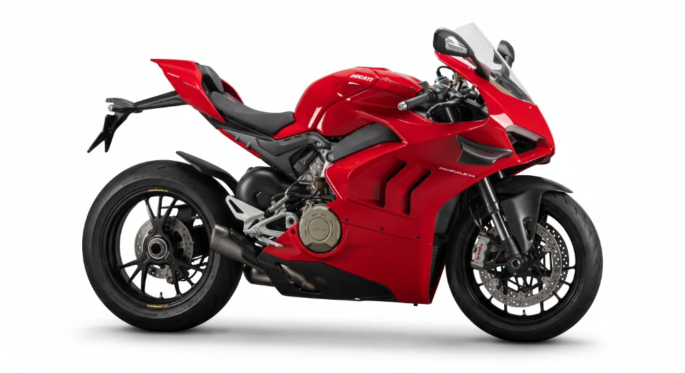
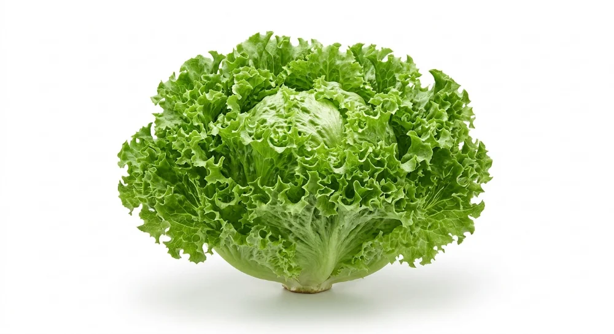
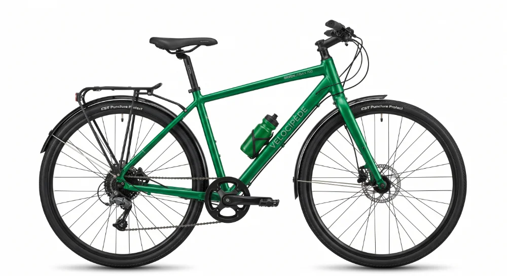
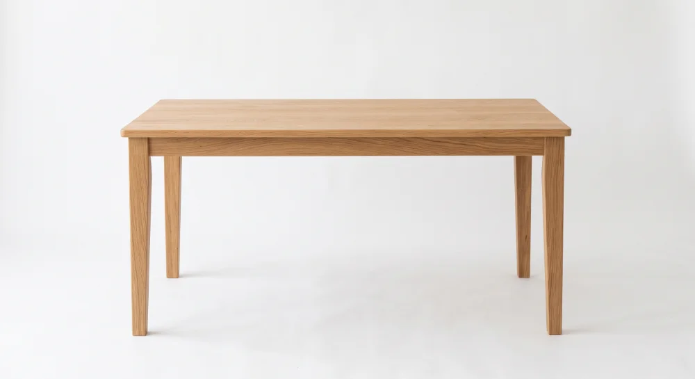
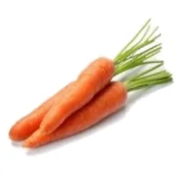
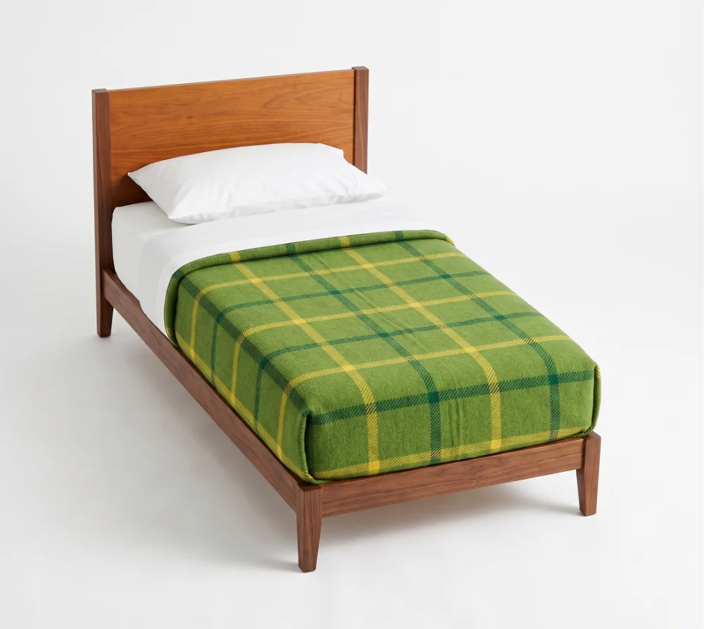
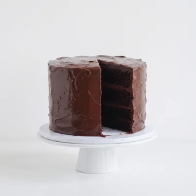
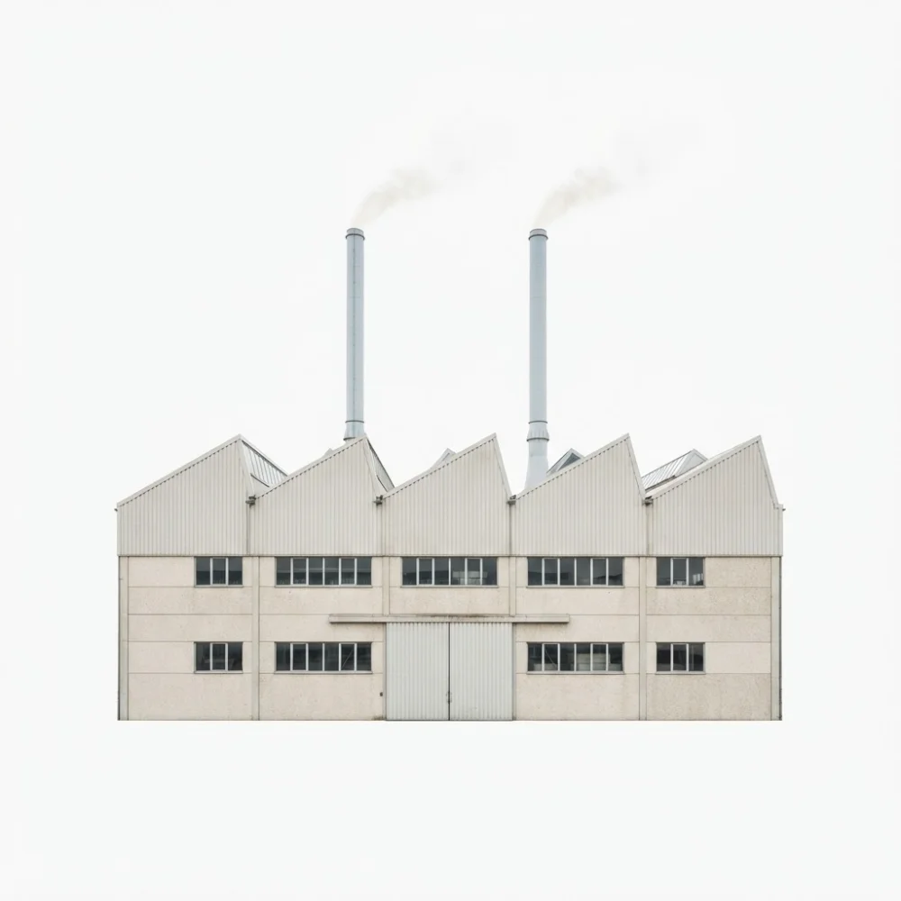
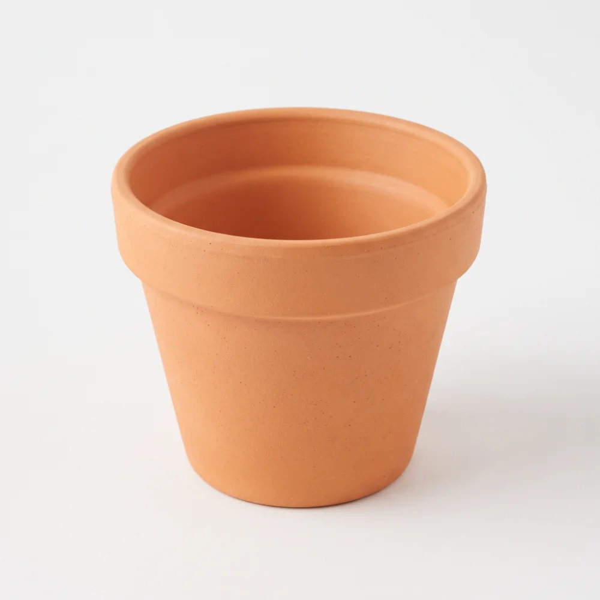
pot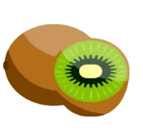
melon kiwi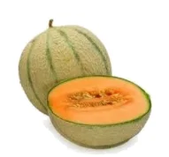
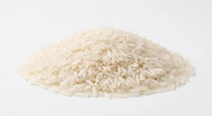
le riz le melon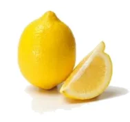
le kiwi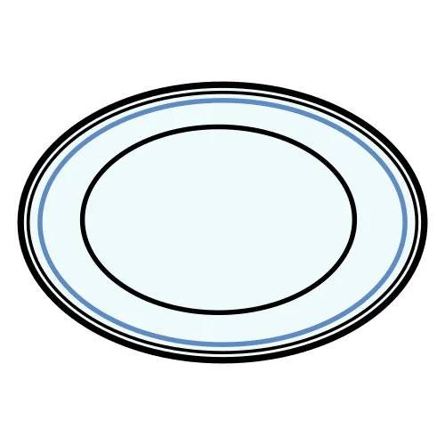
l'assiette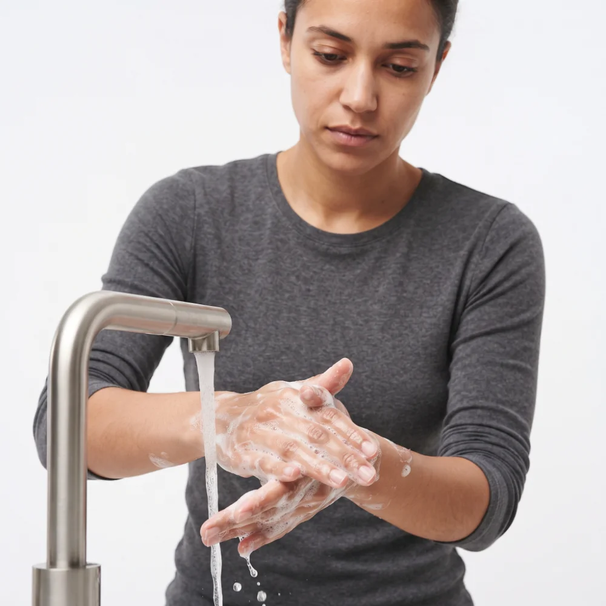
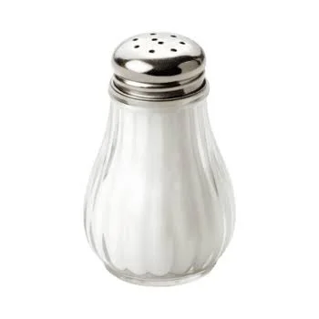
sel citron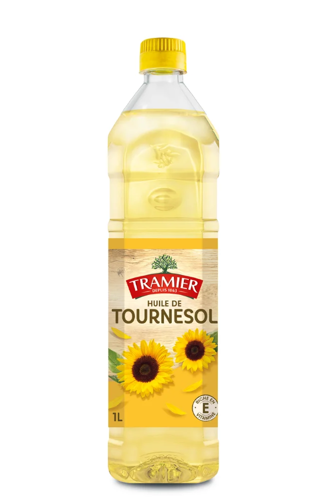
huileLes 29 mots repères : ananas, ballon, carotte, cerise, deux, melon, fenêtre, gâteau, gilet, immeuble, jaune, kiwi, lit, moto, nuage, ordinateur, pot, pied, quatre, robot, salade, rose, table, usine, vélo, wagon, xylophone, yaourt, zéro.
Les prénoms de la classe et ceux du livret : Karim, Sofia, Lina, Amine.
Mots-outils : ON, NOM, PRÉNOM, LYCÉE, CUISINE, MENU. Petits mots : le, la, un, une, est, a, à, et, il, elle, là, sur, non.
Voyelles : a, i, o, u, é, e. Consonnes : l, m, r, s, v, t, p.
Les syllabes du palier 2 et les mots inconnus du palier 3 (rame, vase, mule, pipe, sole, tulipe) n'utilisent que ces sons.
Une étiquette de prix (produit en capitales, prix en gras) et un menu en trois lignes : lus en global, comme en atelier.
Trois consignes à l'impératif : Lavez, Levez, Coupez — celles de la planche du métier.
Ne fait pas partie de l'objectif commun. Sons complexes (ou, on, an, eau, ch, gn), réponses rédigées. Sert à ne pas laisser plafonner les deux élèves déjà lecteurs.
Paliers 1 à 4 : individuel, avec l'enseignant, 10 minutes par élève. Paliers 5 à 7 : en autonomie, l'enseignant vérifie ensuite.
Acquis = réussite sans aide. En cours = réussite avec une aide (relecture, syllabe soufflée, image montrée).